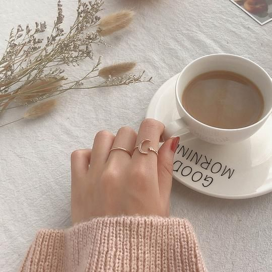
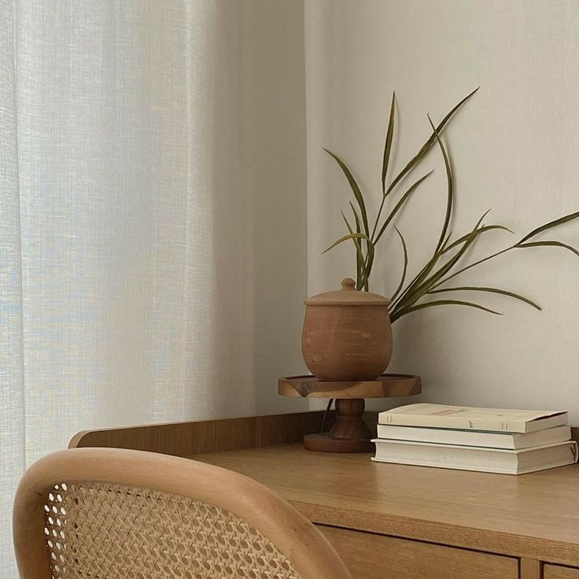

|  |
Branding Diri
Apa minat, bakat, keinginan yang dimiliki biasanya akan tercermin dari sebuah hasil karya. Anda perlu mengenal diri sendiri terlebih dulu sebelum meminta orang lain mengenal anda........... learn more |
|  |
8 Tips memilih jurusan kuliah yang tepat
Cara memilih jurusan kuliah yang pertama adalah dengan mengetahui kegemaran kamu. Saat memilih jurusan kuliah jangan lupa untuk perhatikan passion atau kegemaran yang kamu miliki. Dengan kamu mengetahui apa yang kamu sukai, maka kita dapat lebih mudah untuk memilih jurusan kuliah. Misalnya, jika kamu menyukai hal yang berhubungan dengan bidang sosial, kamu bisa pilih jurusan-jurusan sosial seperti hukum atau komunikasi. ........learn more |